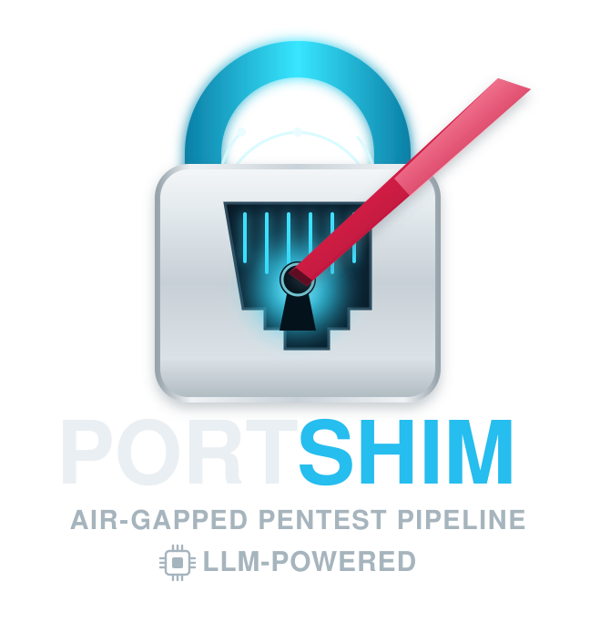
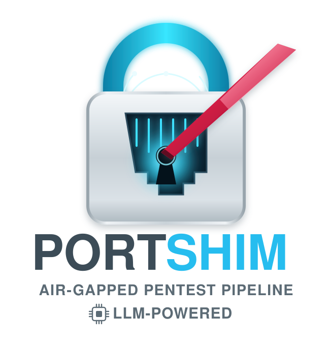

An on-site pentest pipeline for authorised security professionals. Air-gapped, LLM-powered, and built to operate without leaving a trace.
AI-agent friendly — works with Hermes Agent, Claude Code, or any CLI-capable assistant. Guided phase gates, report drafting, and decision support.
PortShim is designed for on-site operations where every second counts and every packet matters.
Phase 0 (Scope) through Phase 5 (Retest). Each phase ends with a review gate - APPROVE, RERUN, MODIFY SCOPE, or ABORT.
Runs entirely on local LLMs via llama.cpp with Vulkan GPU offload. Three local models per phase - no internet required.
Three noise profiles (Silent Entry, Surgical, Full Assault) control how aggressively tools probe the target. Set once per engagement.
DOCX (branded), PPTX (6-slide exec brief), PDF (weasyprint), XLSX (severity-coloured checklist) - all from one command.
Built-in portshim CLI manages llama-server: start, stop, restart, status, model switching. Auto-starts on scan for local mode.
Gate 1 uses topology.py --gate1 for complete, never-truncated host summaries from XML. No more missing hosts in truncated output.
Discover, select, and assess nearby access points without dropping your network connection. Auto-fallback to managed mode, with --force for full airodump-ng monitoring.
Each phase has a clear goal, a defined model assignment, and a gate condition before moving to the next.
Bootstrap environment, sync knowledge bases, configure engagement profile (Silent Entry / Surgical / Full Assault) and LLM mode (local / hybrid / cloud).
nmap sweep (all ports, OS detection, service versioning), device classification (40+ roles), topology mapping. Gate 1 uses topology.py --gate1 for complete host summaries from XML.
CVE cross-reference via nmap-vulners NSE, nuclei deep-scan, CVSS v3.1 scoring. Prioritised findings list with exploit availability markers.
Hydra brute-force, paramiko SSH automation, manual probe of discovered services (telnet, HTTP, UPnP). SuperGemma4 26B for exploit analysis. Non-destructive escalation only.
Multi-format deliverables from one command: DOCX (branded, Calibri font, A4), PPTX (6-slide exec brief), PDF (weasyprint, A4), XLSX (severity-coloured checklist with dropdowns).
Rescan after remediation, compare baseline vs retest, auto-classify as FIXED / STILL OPEN / NEW / REGRESSION. Update checklist with retest status.
Designed for a field laptop with a capable GPU. All dependencies are local — no cloud required.
Start the server, load a model, and run your first scan analysis.
llm-config.py hybrid.--force flag and structured output work with any AI assistant. It pairs naturally with Hermes Agent for interactive phase-by-phase orchestration, and works equally well with Claude Code, Codex, OpenAI CLI, or custom agent workflows. The agent guides you from scope confirmation through to final retest, presents findings at each gate, and waits for your approval before advancing. Common workflows include:iw dev scan) to avoid disconnecting you. You get full AP discovery (SSIDs, BSSIDs, signal, encryption) without losing connectivity.--force. A warning explains the trade-off before proceeding. After the operation, the interface is restored to managed mode and PortShim attempts to reconnect.~/local-models/<model-name>/, start the server, and run python scripts/benchmark-models.py --local-only. See the benchmark reference for details.r8152 driver with full hardware offload. The D-Link DUB-1312 (ASIX AX88179) is a good backup but verify it's on the ax88179_178a driver, not the generic cdc_ncm. Avoid scanning through USB-C dock Ethernet if possible — the shared DisplayLink bus causes packet drops under load.